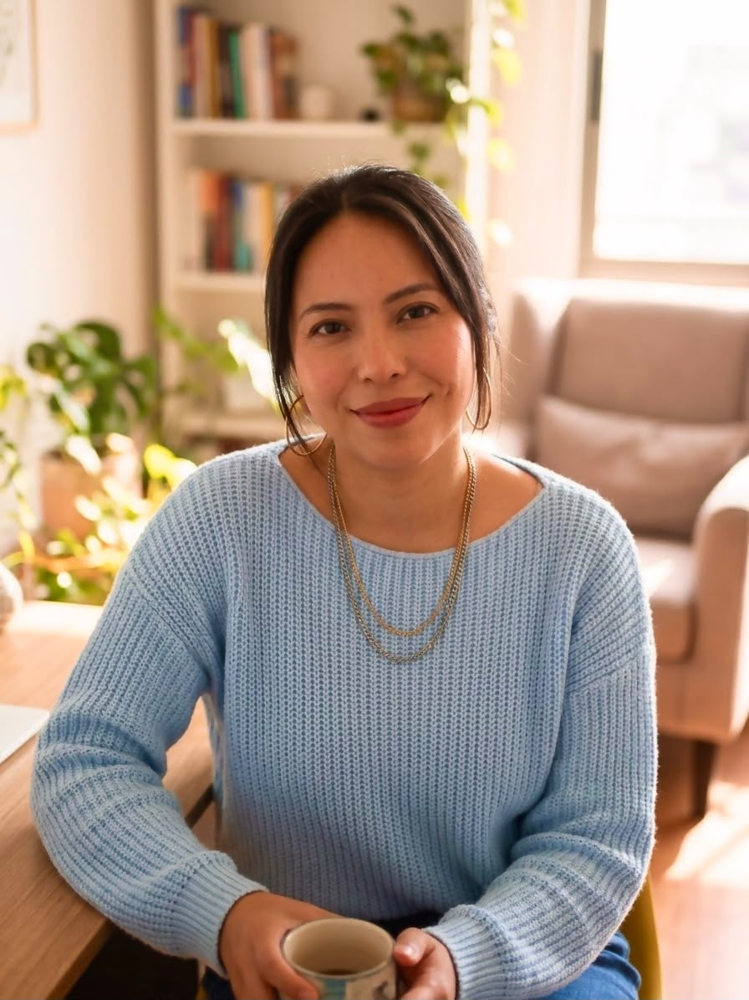

Psicología clínica para mentes sobreexigidas y sistemas nerviosos agotados.
Acompaño a personas que llevan años sosteniendo más de lo que muestran, a comprender su historia y construir una vida que deje de sentirse como supervivencia.
Trauma
Neurodivergencia
Regulación emocional
Procesamiento sensorial
Certificada en ADOS-2 y ADI-R. Diplomada en arteterapia.

Lisette SolísPsicóloga clínica
Psicóloga Clínica Lisette Solís
De la supervivencia a la autonomía
Acompaño a quienes sobreviven a su historia de vida, bajo el peso de la perfección, hostigamiento, resistencia o la complacencia, pero también a quienes lidian con ira, ansiedad, estrés, cansancio emocional, sobrecarga, sensación de vacío o pánico.
Mi meta es que logres entender lo que sientes y construir tu identidad de manera genuina, con dignidad y seguridad.
Especialidades
Especialista en Traumas del Desarrollo, Neurodivergencia (Autismo, TDAH) y Migración en adolescentes y adultos.
Traumas del desarrollo
Neurodivergencia (autismo, TDAH)
Migración
Adolescentes y adultos
Formación
Experta en Regulación Emocional y Procesamiento Sensorial. Certificada en ADOS-2 y ADI-R. Diplomada en Arteterapia.
Regulación emocional
Procesamiento sensorial
ADOS-2
ADI-R
Arteterapia
Trayectoria clínica y especialización de alto nivel
Toca cada columna para destacar su contenido.
Formación y registros oficiales
Psicóloga Clínica, Universidad de Guayaquil (Ecuador) y UNIACC (Chile).
Registro Nacional de Salud (Chile): SIS N° 842333.
Registro Senescyt (Ecuador): 1006-2022-2568774.
Especialización en trauma
Diplomada en Traumas del Desarrollo.
Especialista en Procesos y Derechos de Adopción.
Experiencia clínica en Trauma Complejo, Regulación Emocional y Migración.
Supervisión Clínica Continua.
Enfoque neuroafirmativo
Diplomada en Abordaje Integral del Autismo.
Especialización en Atención Clínica para Adultos Autistas (Harvard).
Evaluación y Diagnóstico de TDAH.
Seminario en Educación y Diversidad de Género.
Certificación para evaluación y diagnóstico de Autismo.
Herramientas terapéuticas
Certificada en ADOS 2 y ADI-R.
Certificada en Supervisión Clínica por la OMS.
Diplomada en Arteterapia y Terapias Expresivas.
Diplomada en Terapia Cognitivo Conductual (TCC).
Formación en Terapia Sistémica Breve.
Formación en Trastornos de ánimo y en Trastornos de la personalidad.
Especialización en Sexología.
Certificaciones en Medicina Preventiva y Primeros Auxilios.
“
Cuando transformas la relación contigo y fortaleces tu estructura interna, todo lo demás se alinea: tus vínculos, tu economía y tu calidad de vida comienzan a reflejar tu verdadera esencia.
Sin embargo, sanar no es un camino lineal ni cómodo. Habrá momentos de frustración, de sentir que retrocedes o que el entorno entra en caos. Ese quiebre no es un error, es parte del proceso. El dolor y la dificultad son la antesala de una reinvención profunda; una oportunidad para descubrir de lo que realmente eres capaz cuando dejas de vivir para los demás y comienzas a vivir para ti.
Sobre mi vida: de la supervivencia a la autenticidad
SupervivenciaAutenticidad
Mi historia
Crecí creyendo que no encajaba, que estaba «rota» y que jamás podría repararme. Soy sobreviviente de una historia de violencia, estuve en situaciones de mucha vulnerabilidad y soy migrante (nací en Ecuador y me mudé a Chile), hija de madre ecuatoriana y padre biológico (migrante) japonés. En mi adultez recibí el diagnóstico tardío de neurodivergencia, que le dio sentido a muchas cosas de mi vida. Todo me motiva para acompañar a otros.
Hacer cambios, sentirme segura de mí misma, abrazar mi historia y pedir ayuda
Transformar mi historia en fortaleza y en propósito para ayudar a otros no fue magia; fue un proceso de sanación, resiliencia, muchas horas de estudio y bloqueo, paciencia y trabajo en equipo. Hoy sé que pedir ayuda es una VIRTUD que deseo transmitirte.
También aprendí a soltar el disfraz: ya no invierto mi energía en encajar en lugares donde no puedo ser yo misma, sino en acompañarte en tu proceso.
Comprendo tu día a día
Te cuento mi historia porque sé lo que cuesta sobrevivir al mundo. Comprendo profundamente lo abrumador que puede ser tomar grandes decisiones, liderar equipos, aprender sobre la marcha para los nuevos desafíos, porque incluso cuando las condiciones de vida mejoran las exigencias también aumentan. Pero también sé lo agotadores que resultan los pequeños desafíos diarios:
Hacer un trámite o cambiar de planes.
Lidiar con visitas inesperadas o hacer nuevos amigos.
Ordenar tu clóset o iniciar una actividad.
Pedir un favor, decir «no», tomar decisiones complejas o darme el permiso de descansar.
Creer en mí, en mi conocimiento, en mis sueños y en mis proyectos.
Transitar la soledad, crear vínculos nuevos, llevar a cabo planes, cuidar de mí.
Líderes y profesionales con alta exigencia y exposición
Personas neurodivergentes (autismo, TDAH)
Migrantes
Sobrevivientes de relaciones abusivas y de historias de trauma
Formas de acompañamiento
Sesión de evaluación y conexiónEl primer paso. Nos conocemos y definimos juntos cómo continuar.
Sesiones individualesPara consultas puntuales o seguimiento, según tu necesidad.
Plan mensualCuatro sesiones por videollamada y acompañamiento entre sesiones.
Acompañamiento anual, Mapa de la CalmaUn espacio terapéutico estable durante 12 meses. Requiere evaluación previa.
Cupos solidariosTarifas reducidas y cupos limitados. Consulta por correo.
Agenda tu primera sesión
Terapia 100% online por Google Meet, de 45 a 90 minutos, en horario de mañana, tarde o noche. Emito boleta de honorarios para reembolso en tu Isapre o seguro complementario.